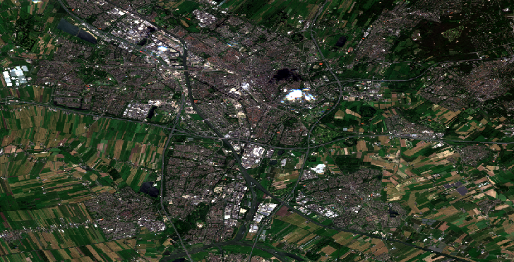

NDVI UTRECHT, THE NETHERLANDS

Original Satellite Image

This NDVI (Normalized Difference Vegetation Index) map of Utrecht, the Netherlands, provides a detailed and insightful representation of the vegetation health and density across the city. NDVI values range from -1 to +1, where higher values indicate high levels of vegetation, and lower values indicate low to no levels of vegetation (e.g., mountains, water, urban areas. The map was created in ArcGIS Online and uses satellite data from 2020 that I downloaded from Google Earth Engine.
I chose shades of green, pink, and blue to represent different NDVI values. Here, green represents areas of high to moderate levels of vegetation, pink represents urban areas (very low vegetation), and blue represents bodies of water (barely any vegetation).